FRONT SEAT ASSEMBLY (for Manual Seat) > DISASSEMBLY |
| 1. REMOVE VERTICAL ADJUSTER COVER LH (for 8 Way Seat Type) |
 |
Using a screwdriver, detach the 2 claws and remove the vertical adjuster cover.
| 2. REMOVE VERTICAL ADJUSTING HANDLE LH (for 8 Way Seat Type) |
 |
Remove the 2 screws and vertical adjusting handle.
| 3. REMOVE VERTICAL SEAT ADJUSTER KNOB (for 8 Way Seat Type) |
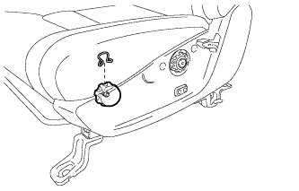 |
Remove the snap ring and vertical seat adjuster knob.
| 4. REMOVE RECLINING ADJUSTER RELEASE HANDLE LH |
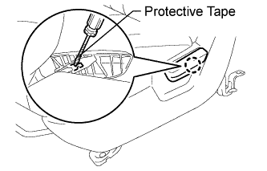 |
Lift the reclining adjuster release handle.
Using a screwdriver, detach the claw and remove the reclining adjuster release handle.
| 5. REMOVE FRONT SEAT CUSHION SHIELD LH |
 |
w/ Seatback Board:
Remove the 2 rubber bands from the hooks.
 |
w/o Seatback Board:
Remove the 2 rubber bands from the hooks.
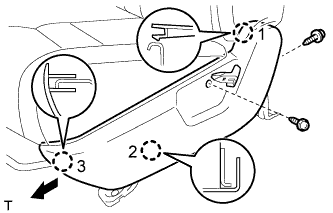 |
for 4 Way Seat Type:
Remove the 2 screws.
Detach the 3 claws in the order shown in the illustration, and then remove the cushion shield.
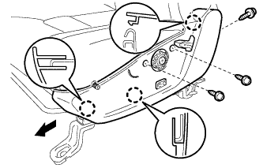 |
for 8 Way Seat Type:
Remove the 3 screws.
Detach the 3 claws in the order shown in the illustration, and then remove the cushion shield.
w/ Lumbar Support:
Disconnect the lumbar switch connector.
| 6. REMOVE LUMBAR SWITCH (w/ Lumbar support) |
 |
Remove the 2 screws and switch.
| 7. REMOVE FRONT SEAT INNER BELT ASSEMBLY LH |
Disconnect the connectors and detach the clamps.
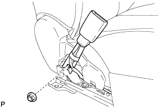 |
Remove the nut and front seat inner belt assembly.
| 8. REMOVE FRONT INNER SEAT CUSHION SHIELD LH |
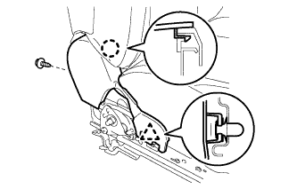 |
Remove the screw.
Detach the claw and clip, and then remove the cushion shield.
| 9. REMOVE SEAT CUSHION COVER WITH PAD |
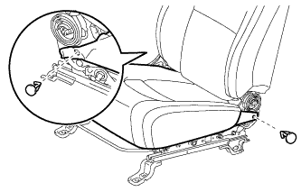 |
Using a clip remover, remove the 2 clips.
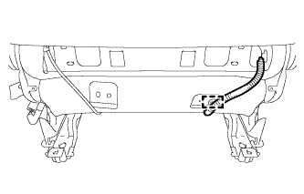 |
Detach the wire harness clamp.
 |
for Front Passenger Side:
Disconnect the seat belt warning sensor connector.
Detach the 2 clamps and remove the seat belt warning sensor connector.
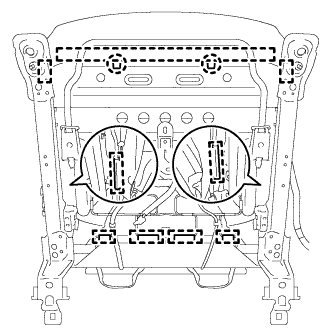 |
Bend the 2 seat frame claws upward.
Detach the hooks and remove the seat cushion cover with pad.
| 10. REMOVE FRONT SEPARATE TYPE SEAT CUSHION COVER |
 |
Remove the hog rings and front seat cushion cover.
| 11. REMOVE FRONT SEATBACK BOARD SUB-ASSEMBLY LH (w/ Seatback Board) |
 |
Remove the 2 screws.
Move the seatback board in the direction of the arrow to detach the 2 hooks and remove the seatback board.
| 12. REMOVE FRONT SEAT HEADREST SUPPORT (w/ Active Headrest) |
 |
Detach the 4 claws and remove the 2 headrest supports.
| 13. REMOVE SEATBACK COVER WITH PAD |
w/ Seatback Board:
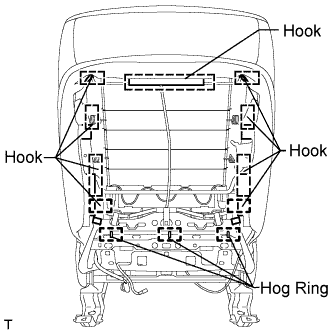 |
Remove the 3 hog rings and detach the 9 hooks.
 |
w/ Front Seat Side Airbag:
Remove the nut and seatback cover bracket from the seat frame.
w/o Seatback Board:
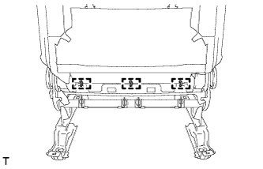 |
Remove the 3 hog rings.
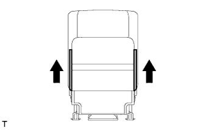 |
Open the 2 fasteners, and then open the seatback cover.
|
w/ Front Seat Side Airbag:
Remove the nut and seatback cover bracket from the seat frame.
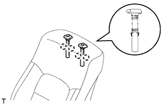 |
Detach the 4 claws and remove the 2 headrest supports.
Remove the seatback cover with pad from the seatback frame.
| 14. REMOVE FRONT SEPARATE TYPE SEATBACK COVER |
 |
w/ Front Seat Side Airbag:
Disconnect the seatback cover bracket from the seatback pad.
 |
Remove the hog rings.
Detach the fastening tape and remove the seatback cover.
| 15. REMOVE INSIDE RECLINING ADJUSTER COVER LH |
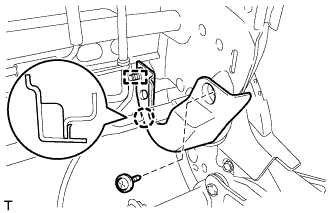 |
Detach the wire harness clamp.
Remove the screw.
Detach the claw and remove the reclining adjuster cover.
| 16. REMOVE INSIDE RECLINING ADJUSTER COVER RH |
Detach the wire harness clamp.
Remove the screw.
Detach the claw and remove the reclining adjuster cover.
| 17. REMOVE OUTSIDE RECLINING ADJUSTER COVER LH |
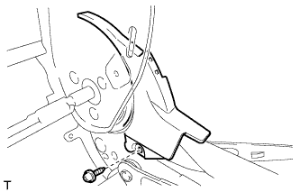 |
Remove the screw and reclining adjuster cover.
| 18. REMOVE OUTSIDE RECLINING ADJUSTER COVER RH |
Remove the screw and reclining adjuster cover.
| 19. REMOVE LUMBAR SUPPORT ADJUSTER ASSEMBLY LH (w/Lumbar Support) |
 |
Remove the 4 springs.
Detach the 4 hooks and remove the seatback spring.
 |
Disconnect the lumbar support adjuster connector.
Remove the 2 screws and lumbar support adjuster.
 |
Detach the 3 claws and remove the bush from the seat frame.
| 20. REMOVE LOWER ACTIVE HEADREST UNIT (w/ Active Headrest) |
 |
Remove the 8 nuts, and then remove the lower active headrest unit together with the upper active headrest unit.
| 21. REMOVE UPPER ACTIVE HEADREST UNIT (w/ Active Headrest) |
 |
Remove the nut and cable clamp to remove the upper active headrest unit from the lower active headrest unit.
| 22. REMOVE FRONT LOWER SEAT CUSHION SHIELD LH |
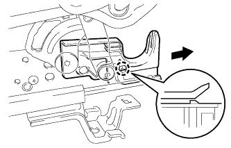 |
Detach the claw and remove the lower seat cushion shield.
| 23. REMOVE FRONT LOWER SEAT CUSHION SHIELD RH |
Detach the claw and remove the lower seat cushion shield.
| 24. REMOVE SEAT POSITION SENSOR |
 |
Using a T30 "TORX" socket wrench, remove the screw and seat position sensor with sensor protector.
Disconnect the connector.
 |
Remove the seat slide position sensor protector from the seat position sensor.
| 25. REMOVE FRONT SEAT WIRE LH |
| 26. REMOVE FRONT INNER SEAT TRACK ASSEMBLY LH |
for 4 Way Seat Type:
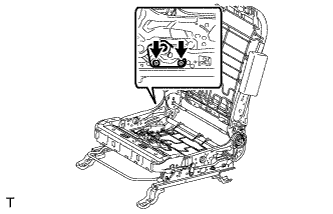 |
Using a T40 "TORX" socket, remove the 2 bolts and inner seat track bracket.
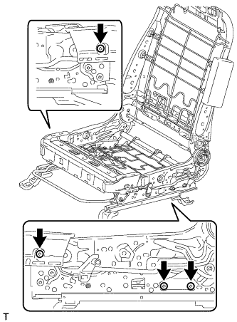 |
Using a T40 "TORX" socket, remove the 4 bolts and seat frame with adjuster.
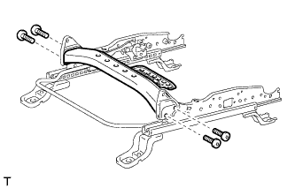 |
Using a T40 "TORX" socket, remove the 4 bolts and reinforcement.
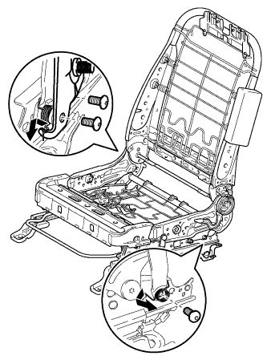 |
for 8 Way Seat Type:
Remove the 2 springs.
Using a T40 "TORX" socket, remove the 3 bolts and inner seat track bracket.
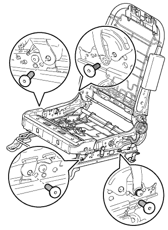 |
Using a T40 "TORX" socket, remove the 4 bolts and seat frame with adjuster.
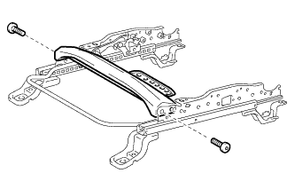 |
Using a T40 "TORX" socket, remove the 2 bolts and reinforcement.
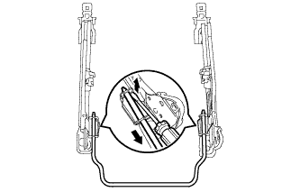 |
Using a screwdriver, detach the 2 springs and remove the seat track adjusting handle as shown in the illustration.
| 27. REMOVE FRONT OUTER SEAT TRACK ASSEMBLY LH |